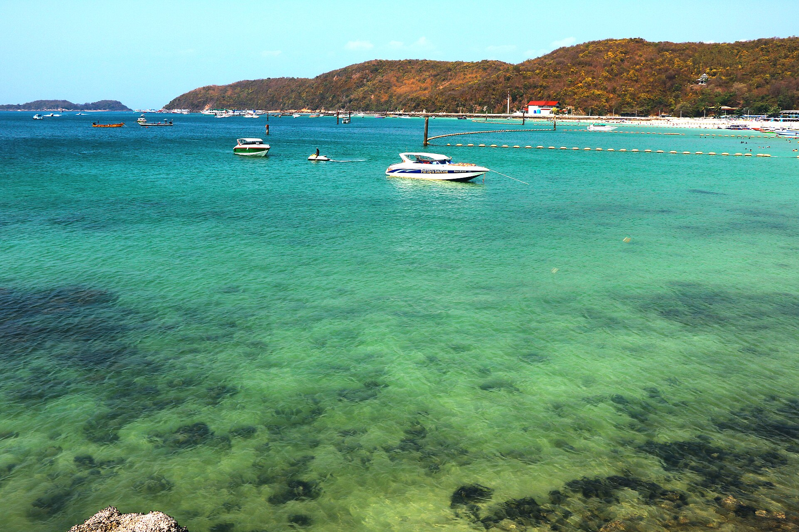
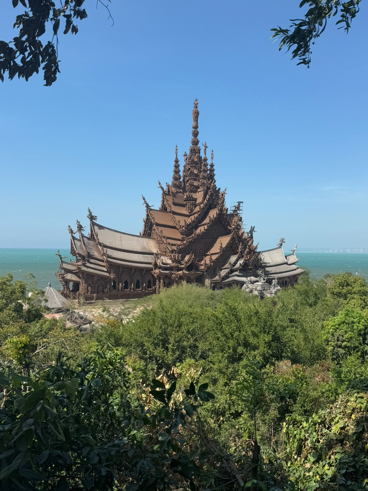
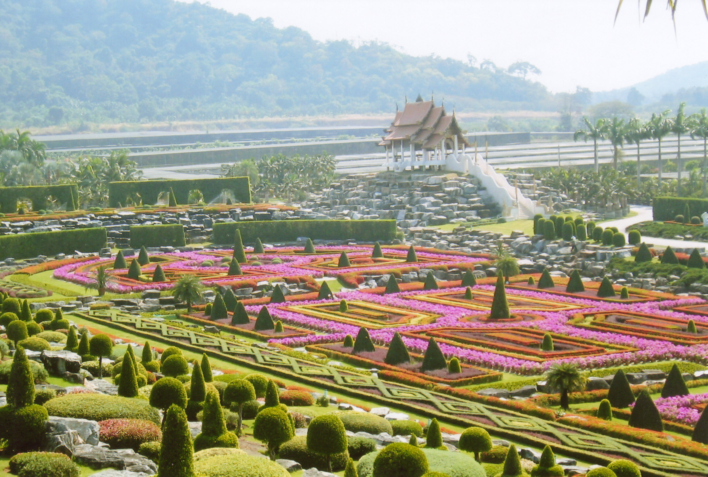

Первый раз в Паттайе
Ко Лан, Храм Истины, обзорная площадка, Большой Будда, плавучий рынок.
Паттайя, острова и выезды из отеля
Подберём русскоязычную экскурсию под дату, состав группы и настроение: море, храмы, шоу, аквапарки, Бангкок, зоопарк или частная поездка на день.
Что обычно покупают туристы
На сайте сделан не сухой каталог, а воронка: человек выбирает тип отдыха, нажимает “забронировать”, и в WhatsApp уже открывается готовое сообщение с названием экскурсии. Форму можно отправить даже без заполнения всех полей.
Ко Лан, Храм Истины, обзорная площадка, Большой Будда, плавучий рынок.
Нонг Нуч, Ramayana, Columbia Pictures Aquaverse, Као Кео, Mini Siam.
Ко Самет, яхта к островам, вечернее шоу, частный маршрут с водителем.
Каталог

Главная морская классика Паттайи: прозрачная вода, пляжи Tawaen, Tien или Samae, морские активности, фото на смотровых точках и свободное время у моря.

Монументальный деревянный храм-музей на берегу моря. Вся постройка покрыта резьбой, внутри рассказывают о буддийской и индуистской символике.

Большой тропический сад с французскими садами, орхидеями, кактусами, пальмами, skywalk и фотозонами. Часто берут вместе с Као Чи Чан и Wat Yan.
Золотой Будда на скале, королевский храмовый комплекс Wat Yan и китайский музей Viharn Sien. Хороший маршрут для тех, кто хочет увидеть другую, спокойную Паттайю.
Смотровая площадка, Big Buddha, пирс Bali Hai, Jomtien, фотостопы и места, которые удобно пройти в первый день, чтобы понять город.
Плавучий рынок с деревянными павильонами, лодками, сувенирами и едой плюс Mini Siam с миниатюрами известных зданий Таиланда и мира.
Один из крупнейших аквапарков региона: горки, lazy river, волновой бассейн, зоны для детей, кабаны и отдых на целый день.
Тематический аквапарк с зонами по фильмам Columbia Pictures, водными горками, wave pool и развлечениями для детей и взрослых.
Большой open zoo в провинции Чонбури: сафари-зоны, птицы, жирафы, носороги, хищники и знаменитый карликовый бегемот Moo Deng.
Классическое вечернее шоу Паттайи: яркие костюмы, сцена, музыка и танцевальная программа. Хорошо бронировать заранее, чтобы выбрать места.
Морская прогулка к островам около Паттайи: купание, рыбалка, снорклинг, отдых на палубе и красивые фото без плотной городской программы.
Дальше, чем Ко Лан, но спокойнее и белее песок. Хороший выбор, если хочется пляжного дня с ощущением настоящего островного отдыха.
Для тех, кому мало пляжа: квадроциклы, багги, джунгли, грязевые трассы, зиплайн или комбинированная активная программа.
Королевский дворец, храмы, каналы, смотровые площадки, торговые центры или индивидуальный маршрут по столице с выездом из Паттайи.
Выход на катере, снасти, рыбалка у островов, отдых на воде и возможность совместить с купанием. Формат зависит от лодки и погоды.
Воронка бронирования
Море, культура, дети, вечер или активный отдых. Фильтры ведут к нужным карточкам.
Кнопка сразу подставляет название маршрута в форму и прокручивает к бронированию.
Сообщение собирается автоматически. Даже пустая форма не блокирует отправку.
Бронирование
Можно заполнить всё, можно выбрать только экскурсию. Мы уточним цену, наличие мест, трансфер из отеля и удобное время.
Вопросы
На лендинге цены не зафиксированы, потому что они зависят от даты, языка гида, количества людей, трансфера, типа лодки и наличия мест. В WhatsApp можно быстро прислать 2-3 варианта.
Да. Самые удобные частные маршруты: обзорная Паттайя, Храм Истины, Нонг Нуч + Као Чи Чан + Wat Yan, Бангкок из Паттайи и яхта к островам.
Для части экскурсий возможен русскоязычный сопровождающий или русская поддержка при бронировании. Наличие лучше проверять на конкретную дату.